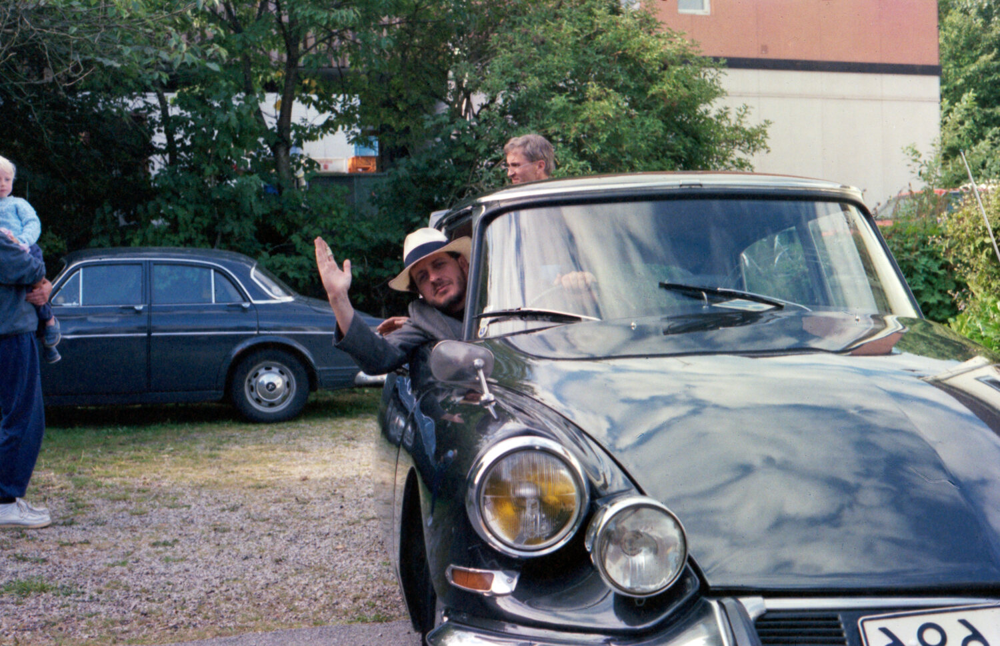
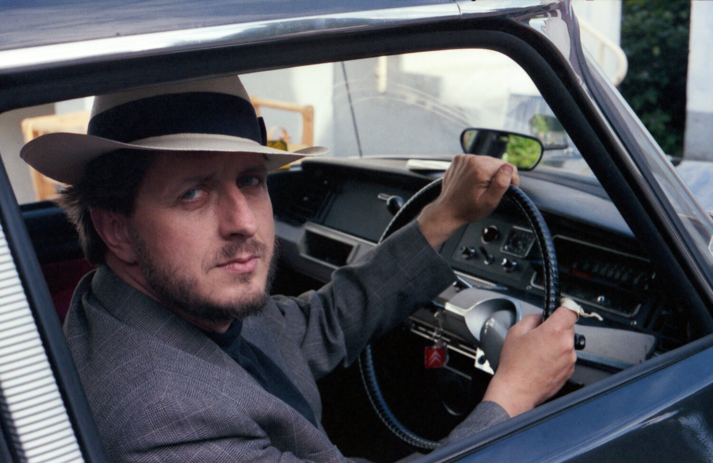
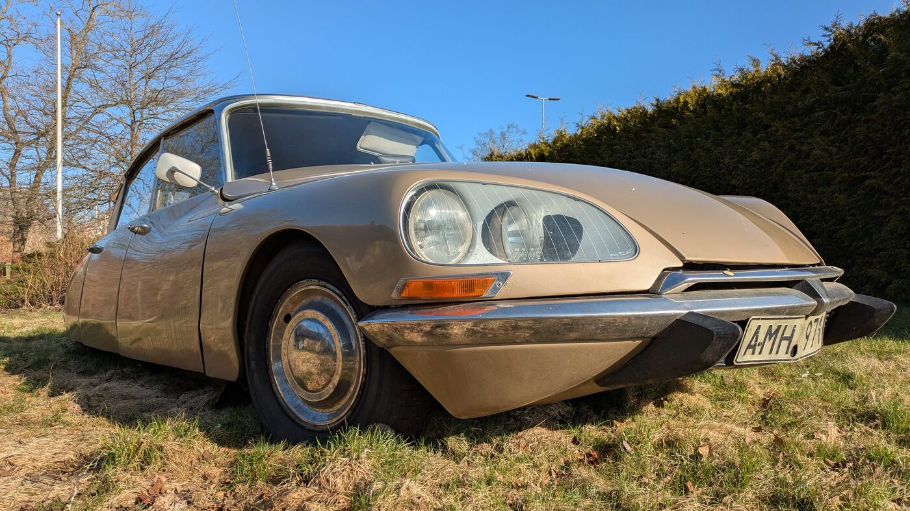
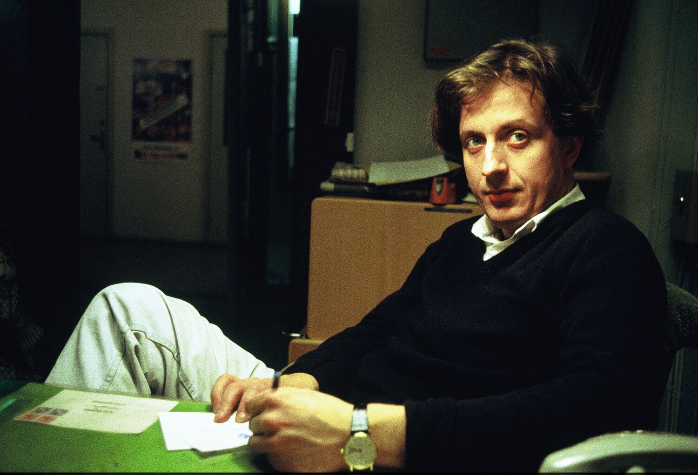

Dad was mad about Citroëns. He even bought one just to have it. The funny thing is he didn't have a licence.
DS
An exhibition with hydraulics.

Shown
3–5 April 2026
The car
Citroën DS
Location
Sankt Olof
What it was

One evening he decided to try driving it. Instruction manual at the ready, and a bit drunk on wine. He bumped into a low stone wall and cracked the lamp. That was enough for him to give up. I was seven or nine.
I helped Dad put on shows for years, in his own house and in a gallery. Hanging paintings, pricing them, naming them, marketing on social media. It's a job. And you let people into your house, where you can't fart or shout because there are gallery visitors standing around.
So I thought: no. We'll do a memorial show instead. In the thing he loved most.
Finding one
I searched frantically for a Citroën DS somewhere on Österlen. Some wanted real money. Others were almost snotty about it — they didn't want people smudging the car.
-
Vad händer om min bil blir skadad?
What happens if my car gets damaged?
One ownerÖsterlen, spring 2026
-
Jag bedriver ingen välgörenhet.
I'm not running a charity.
Another ownerWhen I said 2000 kronor, max
In the end I found Janne on Facebook. He drove it down for petrol money and a bit more.
Paintings and notes in place. Opera out of the boot, off a battery, fat speakers and a phone dedicated to the job.

A lot of the people who came were Citroën fanatics. They started talking about Citroëns rather than my father's art. That didn't bother me at all.
Why a car
-
Mina andra intressen är min 4-årige son, operamusik och att måla paddor.
My other interests are my four-year-old son, opera music, and painting toads.
Anders Waernebo GarnowVärnamo-Nyheter, 1991
The four-year-old is me. Thirty-five years later I put the opera back in the car.
-
Jag har inget körkort, men jag älskar att bara sitta i den där bilen och ännu hellre: låta mig köras omkring. Jag tror det kallas bilneuros.
I don't have a driving licence, but I love just sitting in that car — and better still, being driven around in it. I think they call it car neurosis.
Anders Waernebo GarnowVärnamo-Nyheter, 1991
More about Anders
The rest of his words
-
Allt skulle vara grått och trist. Man blev nästan slagen på käften om man använde färg, men "Ludde" gav oss råg i ryggen.
Everything had to be grey and dreary. You'd near enough get a smack in the mouth for using colour — but "Ludde" put some backbone in us.
Anders Waernebo GarnowOn the Royal Institute of Art in the seventies
"Ludde" is Evert Lundqvist, the same man who found him in the cloakroom.
-
Man måste ha tålamod, att vänta. En del målningar blir man aldrig färdig med, andra löser sig som en rebus. Oro är en viktig ingrediens i måleriet.
You have to be patient, to wait. Some paintings you never finish; others solve themselves like a riddle. Unease is an important ingredient in painting.
Anders Waernebo GarnowYstads Allehanda, 2018
-
Det är som att greppa horisonten men aldrig nå den.
It's like grasping the horizon and never reaching it.
Anders Waernebo GarnowYstads Allehanda, 2018
Who he was
My dad was a painter, academically trained, and an ace at colour, humour and madness.
Anders Waernebo Garnow, 1953–2021. A childhood in Åmål, his teens in Värnamo, then Gerlesborgsskolan in Stockholm at eighteen and the Royal Institute of Art at twenty — "a thousand hopefuls applied and fifteen of us got in."
There he met Evert Lundqvist. Anders was working the cloakroom at the Nationalmuseum to make rent when Lundqvist came past, handed him an envelope with a few thousand kronor in it, and told him: du ska inte stå här, du är konstnär — you shouldn't be standing here, you're an artist.

He sat on the board of Konstnärsklubben in Stockholm, a club that had counted Carl Larsson, John Bauer and Prince Eugen among its members. Smålands Konstnärsförbund from 1974. Värnamo's culture grant in 1982.
After a fire in the Stockholm flat he settled on Österlen, and worked in the same stubborn style until he died on 15 September 2021.
His voice
Nothing loads from YouTube until you press play.
Credits
- The paintings Anders Waernebo Garnow
- The car Lent by Janne Samuelsson
- Installation Gustaf Baltsar Garnow
- Shown at Konstrundan, 3–5 April 2026
Photos
Press
- Österlenmagasinet 2 April 2026 — Fredrik Ekblad
"Här möts förbipasserande och nyfikna besökare av en konstupplevelse som inte marknadsförs på stora affischer, utan upptäcks i det lilla."
Pass him on
If you know someone who would have liked him, send it on.
Pass it on
Send it to someone who likes a good car and a good painting.